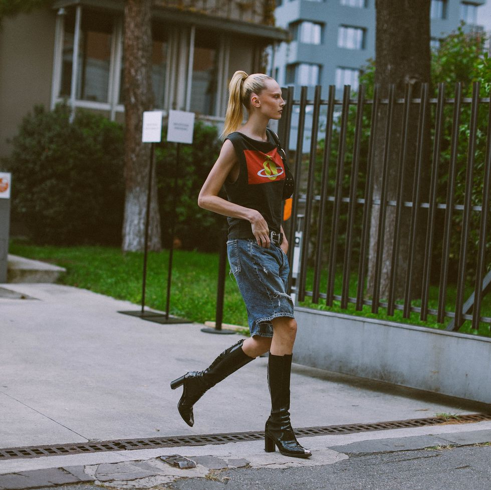
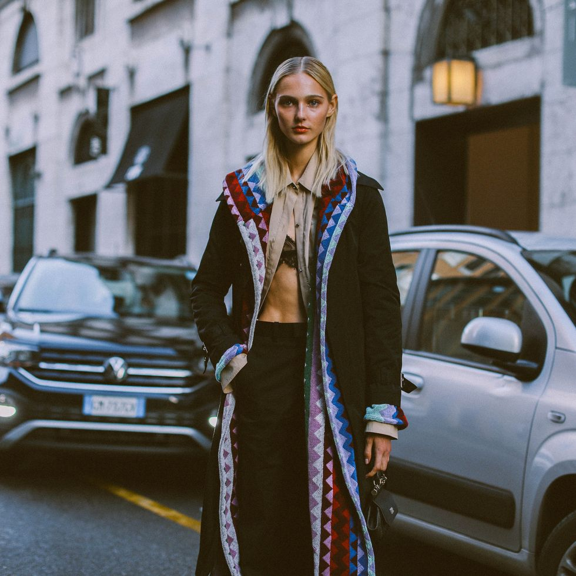
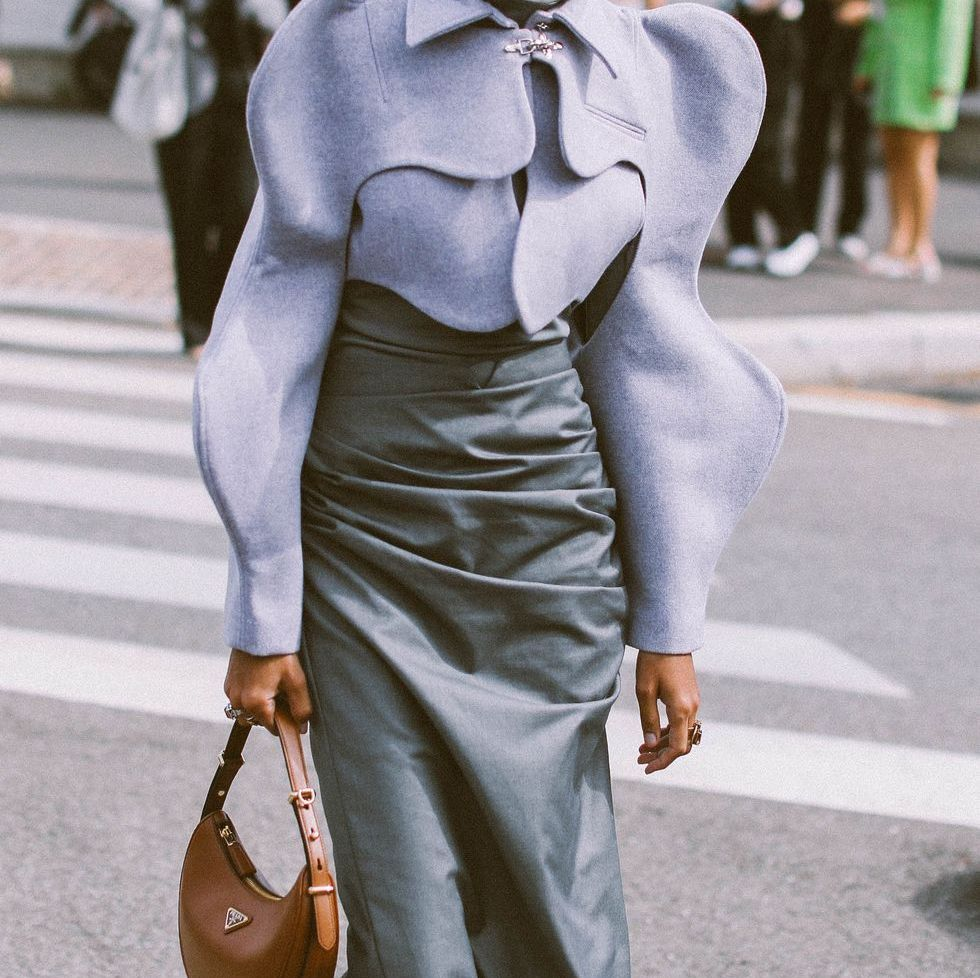

MILAN
To step into the world of modeling in Milan, aspiring talents can begin by reaching out to esteemed agencies like Women Management Milan, Why Not Model Management, and Fashion Model Management. These agencies often host open casting calls, providing a platform for models to showcase their potential. Building a strong portfolio that highlights versatility and individuality is crucial when approaching Milanese agencies. Milan Fashion Week is a focal point in the city's fashion calendar, attracting industry professionals from around the globe. Aspiring models can attend events, network with industry insiders, and immerse themselves in the city's unique modeling culture. Milan embraces diversity and innovation, making it an ideal destination for those who aspire to leave a mark on the global fashion stage.


